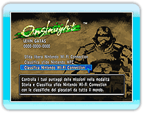
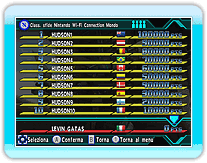

19 |
Classifica Nintendo Wi-Fi Connection |
 |
|
I risultati delle missioni nella modalità Storia e nelle Classifica sfide Nintendo Wi-Fi Connection vengono registrati nelle Classifiche Nintendo Wi-Fi Connection, permettendoti così di competere per il punteggio migliore con giocatori da tutto il mondo.
Ci sono 3 tipi di classifiche: Mondo, Europa e Amici. Le classifiche ti permettono di vedere non solo le classifiche di tutti i giocatori del mondo, ma anche la posizione del tuo punteggio. *Devi creare un salvataggio per poterti registrare nella Classifica Nintendo Wi-Fi Connection.
Quando selezioni "Classifica Nintendo
*In alcuni casi aggiornare le Classifiche Nintendo Wi-Fi Connection può risultare impossibile.

Seleziona "Classifica Nintendo Wi-Fi Connection" da "Nintendo Wi-Fi Connection", poi scegli i criteri delle classifiche che vuoi vedere. In fine seleziona "Punteggio migliore" o "Punteggio giocatore" per vederne le classifiche.
*In alcuni casi aggiornare le Classifiche Nintendo Wi-Fi Connection può risultare impossibile. *In alcuni casi è necessario un po' di tempo per visualizzare le Classifiche Nintendo Wi-Fi Connection.
|
 |
 |
 |